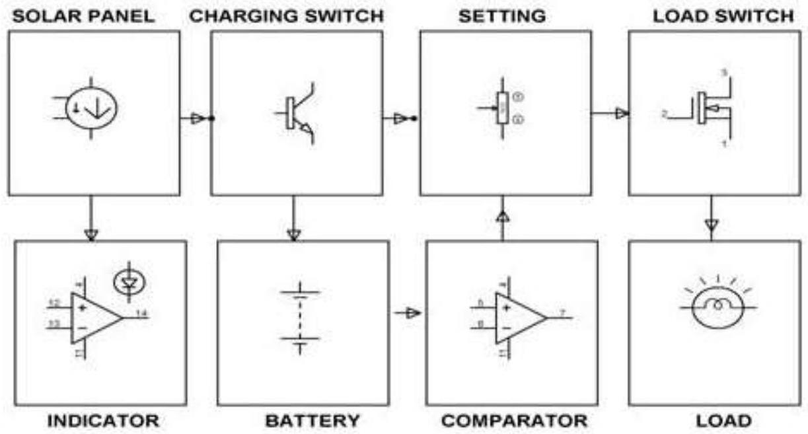
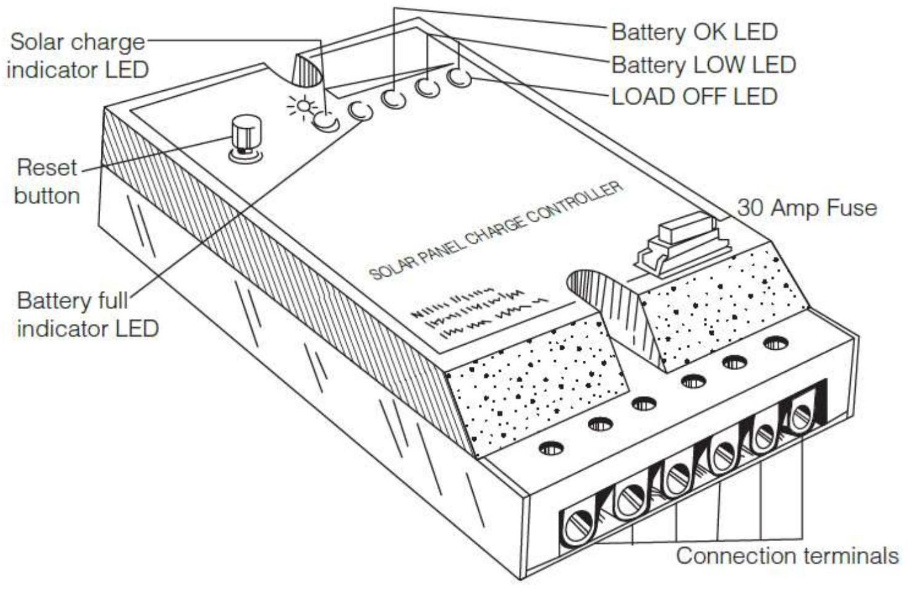
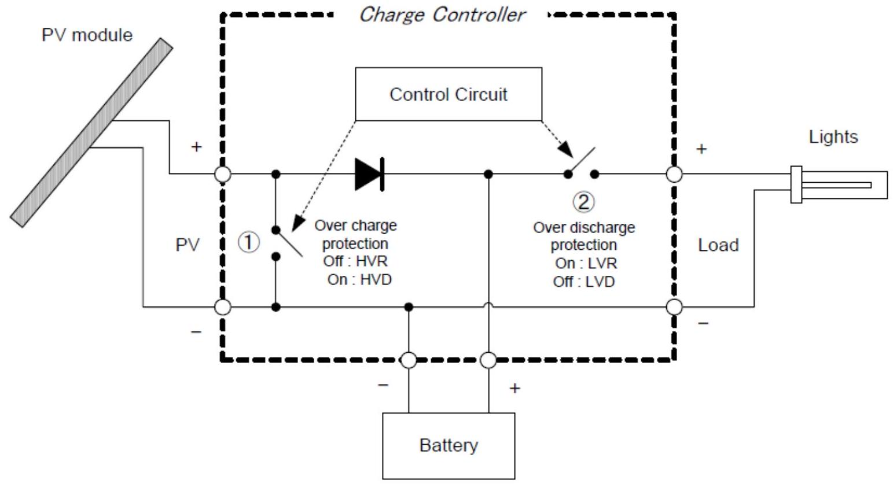
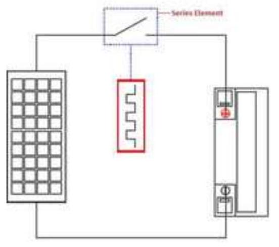

Charge Controllers: Types & Operation
CHARGE CONTROLLER
'charge controllers' which are devices used to manage the energy flow in solar electric systems. Solar electric systems use charge controllers (also called charge regulators) to manage the electrical power produced by the modules, to protect the batteries and to act as a connection point for all the system components (in systems without inverters).
The charge controller has a number of primary functions. Firstly, it provides a central point for connecting the load, the module and the battery.
Secondly, it manages the system so that the optimum charge is provided to the batteries.
Thirdly, it ensures that components (especially batteries and lights) are protected from damage due to overcharge, deep discharge and changing voltage levels.
Finally, it enables the end-user to monitor the system and identify potential system problems.
Block Diagram of Solar Charge Controller
TYPES OF CHARGE CONTROLLERS
- Series type controllers
- Shunt type controllers
- PWM controllers
- MTTP controllers
SERIES TYPE CHARGE CONTROLLERS
Series-type controllers rely on relays or electronic switches in series between the module and the battery to disconnect the module when the battery reaches a set voltage. When the battery state of charge goes down after the load is used, the controller resets the charger to turn 'on' during the next solar cycle. The simplest and lowest cost controllers, these are less common in modern PV systems.
Over charge protection
PV module is connected to charge a battery (Switch (1) is on) When battery voltage reaches at maximum charging voltage, called HVD (High Voltage Disconnect), PV module is disconnected to avoid further charging (Switch (1) is off). When battery voltage reduced to certain voltage, called HVR (High voltage Reconnect), after disconnection of the PV module, the PV module is connected again to start charging (Switch (1) is on again).
Over discharge protection
The load is connected to use appliances (Switch (2) is on). When the battery voltage reaches a minimum discharging voltage, called LVD (Low Voltage Disconnect), load is disconnected to avoid over discharge (Switch (2) is off).
When the battery voltage is recovered at a certain voltage, called LVR (Low Voltage Reconnect), load is reconnected again and the appliances can be used again (Switch (2) is on again).
SHUNT TYPE CONTROLLERS
Shunt-type controllers work in parallel between the array and battery. They gradually reduce power from the module to the battery as the battery reaches full charge, harmlessly shortcircuiting it back through the module. In general, shunt-type controllers are low cost, fairly simple in design and well suited for small off-grid PV systems.
‘PULSE-WIDTH MODULATION (PWM) CONTROLLERS’
'Pulse-width modulation (PWM) controllers' send pulses of charge to the battery that vary depending on its state of charge. A battery with a low state of charge gets a 'wide' pulse (i.e. high charge) or the charge is on continuously. As the battery gets fully charged, the controller sends increasingly 'narrow' pulses of charge. A fully charged battery (in 'float' mode) just gets an occasional narrow pulse. The controller measures the state of charge and adjusts the pulse accordingly. (Both PWM and MPPT controllers use features of the series- or shunt-type controllers.)
PWM regulators are similar to series regulators, but they use a transistor instead of a relay to open the array. By switching the transistor at high frequency with various modulated widths, a constant voltage can be maintained. The PWM regulator self-adjusts by varying the widths (lengths) and speed of the pulses sent to the battery. Unlike the on/off charge controllers which instantaneously cut off the power transfer to minimize battery overcharging, PWM regulators act like a rapid on/off controller constantly.
When the width is at $100\%$, the transistor is at full ON, allowing the solar array to bulk charge the battery. When the width is at $0\%$ the transistor is OFF, open circuiting the array preventing any current from flowing to the battery when the battery is fully charged.
Like the series regulator, the transistor can be placed in either the positive or negative line, allowing the regulator to be used in positive and negative ground systems. The difference between the series regulator and the PWM regulator is the PWM of the transistor. When the modulation width is at $100\%$ or $0\%$, the regulator is essentially a series regulator, it is that modulation width variation that allows the PWM regulator to create a constant voltage to the battery as opposed to the on/off of the series regulator. The below figure shows an example of a PWM regulator regulating with a $70\%$ on $30\%$ off duty cycle.
‘MAXIMUM POWER POINT TRACKERS’
'Maximum power point trackers' (MPPT) utilize DC to DC conversion electronics to 'track' the maximum power point of the module or array I-V curve.
The maximum power point voltage of a module is often much higher than its battery-charging voltage, meaning that a 100 Wp module might only be charging a battery at 75 Wp at 14 V (i.e. the charging voltage) - the maximum power point might be 16 V . By keeping the charge voltage at the maximum power point, MPPT controllers gain an extra 10-35 per cent output from the array. MPPT trackers also can accept higher voltages from the module, meaning that they are able to use modules with a higher voltage (i.e. 24 V or higher) and convert the power to 12 V (or the rated battery voltage). MPPTs tend mostly to be used in large systems, where getting the most out of the array results in significant cost gains for the system.
CHECKING THE STATUS OF A CHARGE CONTROLLER
When checking the system, it is important to know the status of the charge controller to determine whether the PV module is connected or the load is disconnected. It is easy to check if the load is connected or not to the charge controller. You can do this simply by switching on a light and if the light comes on, the load is connected. If it does not it follows that the load is disconnected. Some charge controllers have a function that displays the disconnection of load.
The following tips will help you to check the status of a PV module connection. The status of a PV connection can be assessed by measuring the voltage at all loads off between 10 a.m. and 2 p.m. on a sunny day,
- When a PV module is connected.
- The battery voltage increases.
- Charging current can be observed using clamp meter or shunt resistance.
- When a PV module is disconnected.
- The battery voltage does not increase.
- When one light is switched on, the voltage starts to decrease till HVR.
- When the voltage reaches HVR, it starts to increase (A').
CONNECTING ORDER
A charge controller is connected to a PV module, a battery and a load. As a PV module generates high voltage (approximately 18 V ), connecting order to a charge controller is important. First, connect the battery to activate the charge controller and stabilize voltage. Second, connect the PV module, and then the load. To disconnect, disconnect the load first, then the PV module, and last is the battery.
Use this as the rule of the thumb, "First battery, Last battery "If a battery is disconnected before disconnecting the PV module, a high voltage from PV module will go directly to the load causing damage to appliances.
| Connection | Disconnection | ||
|---|---|---|---|
| 1 | Battery | 3 | Battery |
| 2 | PV Module | 2 | PV Modu |
| 3 | Load | 1 | Load |
| First Battery, Last Battery | |||
MAINTENANCE OF CHARGE CONTROLLERS
Insects may cause problems. Check presence of insects, especially ants, to see if they are not nesting inside a charge controller. A poor charge controller suffers from drifts of the set point voltage. It is important to check the set point voltage periodically.
COMMON PROBLEMS
- The drifting of the set point voltage damages the battery.
- Misconnection and short-circuiting cause burnout.
- Malfunction. --- Use good brand.